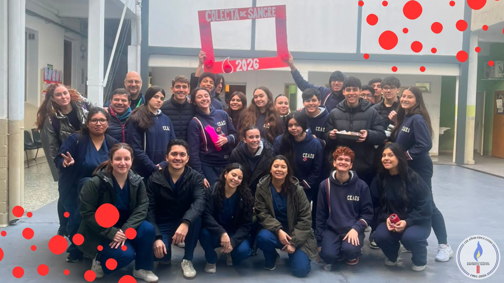

Donacion de Sangre con el Hospital Italiano
Por: Mauricio Criollo y Guadalupe Arias

Participaron los alumnos de 5°A.
El día martes 30 de Junio a partir de las 07:30 am, los alumnos de 5to A llevaron junto con el Hospital Italiano, una campaña de donación de sangre hasta las 12:30 pm aproximadamente. El alumnado de 5to A se dividió en 3 grupos repartidos en los 3 horarios que el equipo de Logística había gestionado para el día ( 07:30 - 09:00 am, 09:00 - 10:30 am, 10:30 -12:05 pm).
Distintas áreas del colegio fueron orientadas para la realización de cada parte del proceso de donación: en la entrada se tomaba el nombre y se chequeaba la asistencia, para luego pasar a secretaría y ser entrevistado y saber si la persona estaba apta para donar, luego pasaba a la sala de extracción, y posterior a que ésta se diera, se dirigía al donante a el buffet para que pudiera ingerir un refrigerio y poder descansar y recomponerse de la donación.
En cada área podía encontrarse a uno o dos alumnos de 5to A asistiendo y ayudando a los profesionales del equipo de salud del Hospital Italiano. Una vez se llegó a el final de la campaña, el equipo de salud se retiró y dió las gracias al colegio y a los alumnos para luego poder hacer una estadística de las cantidades recaudadas de sangre y sus componentes (plaquetas, glóbulos rojos, etc).